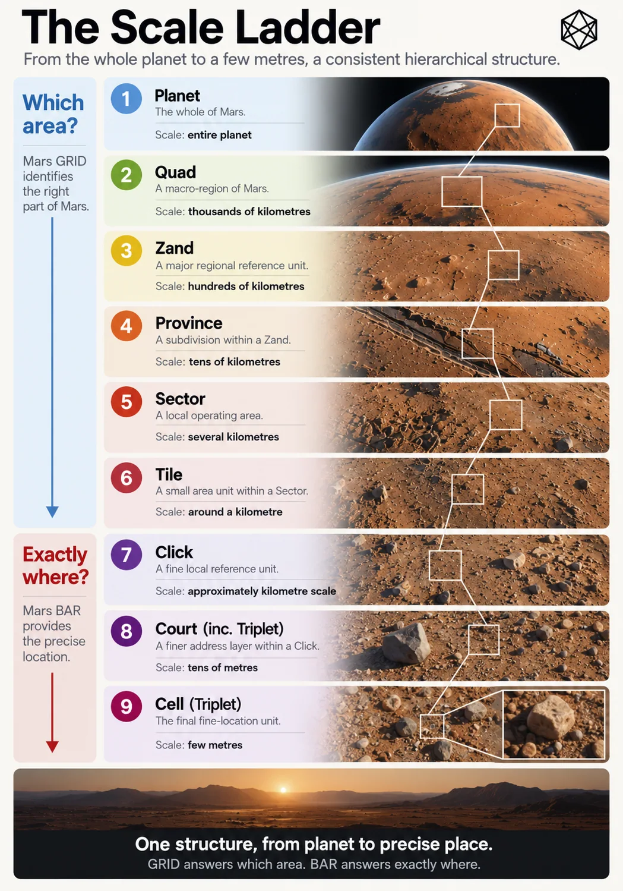

How Big Is a Place?
Designing the Scales of Civil Geography
A whole-planet geography immediately creates a problem of scale.
Mars is far too large for one useful size of place. A region large enough to tell someone which part of the planet a settlement occupies will be almost useless for operating around that settlement. A unit small enough to distinguish local infrastructure would produce an absurdly detailed planetary map. Shrink again to the few metres needed to find an injured person, a rover or a particular airlock, and we are no longer really asking the same geographic question.
So the next design choice is not simply how to divide Mars.
It is how many different scales of place the system needs.
The twelve jobs from Chapter 4 have already done most of the intellectual work. They operate at different scales, so the geography must too. The system should follow those jobs rather than searching for one mathematically satisfying size and hoping civilisation learns to live with it.
Scale follows the job
Suppose someone asks where a settlement is.
For somebody on Earth, a broad answer may be enough: which major part of Mars? A long-distance transport operator needs something narrower. Regional infrastructure planning needs a finer area again. Around the settlement itself, tens of kilometres become important. Within that operating environment, planners and emergency services may care about individual patches of ground roughly a kilometre across.
All of those are legitimate answers to where?
They simply answer at different scales.
There is therefore no single correct size for a civil place. Make every unit enormous and local operations lose useful distinction. Make every unit tiny and every regional question becomes buried beneath precision that contributes nothing to the decision.
That is worth keeping in mind because technical systems have a habit of treating finer resolution as automatically better.
It is not.
If the question is whether an incident happened in the western or eastern part of a large region, identifying its position to three metres adds accuracy but not useful geographic understanding. Equally, if an emergency crew is looking for a damaged rover, telling them only which thousand-kilometre region contains it is technically correct and operationally ridiculous.
Useful geography provides the amount of spatial distinction appropriate to the job.
A common system therefore needs several resolutions rather than one compromise resolution that is mediocre for almost everything.
Why a hierarchy helps

Read a description of this illustration
This draft image has inaccurate scale annotations: MGRID Sector is roughly tens of kilometres, Tile several kilometres, and Click approximately a kilometre. BAR then divides Click into Courts and Cells. Approved for inclusion in the staged reader with the adjoining figure note.
There is an obvious alternative.
Divide the whole planet into very small units, give every one a unique identifier and let software assemble larger areas whenever required. A settlement can be one collection of units, a transport region another and a scientific programme a third.
Computers would cope perfectly well.
The limitation is not processing power. It is context.
A list of several thousand small global identifiers may describe an area with exquisite precision while giving a person almost no sense of where on Mars that area lies. Something else has to convert the list into a useful mental picture.
Hierarchy can build that context into the structure.
If a fine area belongs to a larger one, and that larger area belongs to another above it, the smallest location inherits a path through the planet. You do not have to understand every fine unit as an isolated global serial number. You can understand it as one part of a local area, within a regional area, within a much broader part of Mars.
The useful property is containment.
Containment allows one physical location to be described at several resolutions without changing systems. A planetary discussion can stop high in the hierarchy. A regional operator can go further. Local planning can go further again. Software can follow the whole chain even when the human using it only needs part of it.
This is different from adding more decimal places to a coordinate.
Coordinate precision progressively sharpens a point.
Hierarchical scale progressively narrows an area while preserving the larger context around it.
Both are forms of zoom.
They solve different problems.
Enough rungs, but no passengers for the sake of it
Once you accept hierarchy, subdivision becomes dangerously enjoyable.
Every area can be split into smaller ones. Those can be split again. If the ratios happen to be elegant, a technically minded person can spend a very happy afternoon creating levels that nobody will ever need.
The hierarchy should resist that temptation.
A scale deserves to exist only if people or systems have a recurring reason to use it independently.
Too few levels, however, create the opposite problem. Imagine moving directly from one enormous planetary region to a settlement-scale area and then to exact location. That looks admirably simple until you try to describe inter-settlement transport, regional statistics, major infrastructure programmes or groups of sites spread across hundreds of kilometres.
Users would invent the missing scales themselves.
That would not be a disaster, but it would defeat part of the purpose of creating common spatial context in the first place.
So the goal is not the smallest possible hierarchy.
It is the smallest hierarchy in which every level does a distinct job.
The relationship between adjacent scales matters too. If one parent contains only two children, the extra level may tell us very little. If it contains fifty thousand, knowing the parent hardly narrows the location at all. Each step should make a noticeable difference to the geographic question while still leaving enough structure for the next step to matter.
For founding Mars, that suggests a conceptual ladder something like this:
At the top, broad planetary orientation: which major part of Mars?
Below that, large territorial context: which substantial portion of that broad region?
Below that, regional operating geography: which area contains the settlement cluster, transport programme or regional activity?
Then local geography: which area around a settlement or persistent site?
Then a kilometre-scale civil area: a small, stable piece of Mars useful for local planning, aggregation and operations.
And then something different.
Where geography becomes address
The most important boundary in the ladder is near the bottom.
A kilometre-scale area and a few-metre location might appear to be nothing more than neighbouring levels of subdivision. Mathematically, they can be treated that way.
Operationally, they are different.
The kilometre-scale unit is still an area.
You can count incidents within it. Infrastructure can cross it. A planning proposal can refer to several of them. Records can be aggregated against it. It gives local spatial identity while remaining large enough to describe a patch of Mars rather than one particular destination.
Move down to a few metres and the question changes.
Where is the casualty?
Which airlock?
Which rover?
Which cargo container?
Which valve?
Which survey marker?
The transition is:
Which area? → Exactly where?
That is the central discovery of this chapter.
Area geography provides containment and context.
Addressing resolves a destination.
The distinction is conceptual rather than merely numerical. There is no magical distance at which an area suddenly becomes an address, but the operating task changes clearly enough that we should allow the architecture to change with it.
This gives us an important freedom later.
The representation best suited to civil areas does not have to be the best human interface for a precise destination. Machines may treat the entire structure as one deterministic spatial chain; people need not interact with every part of that chain in the same way.
The old design work reached the same conclusion: kilometre-scale geography remains useful as an area, whereas the few-metre level normally exists to identify one specific destination.
That tells us where the civil-area hierarchy should stop.
Exact addressing can continue beneath it without pretending it is simply more of the same.
What the ladder buys us
The case for hierarchy now becomes quite narrow.
It gives scale. The same architecture can support planetary orientation, regional work and local operations.
It gives containment. A fine civil area belongs deterministically within progressively larger areas, allowing data and references to aggregate upwards.
It gives context. A local identifier can tell us something about where it sits on Mars rather than behaving like an arbitrary number drawn from a planet-sized list.
And it gives selective resolution. A person can stop at the level appropriate to the task. A broad conversation does not need local detail. A regional analysis does not need an exact address. Fine resolution appears when fine resolution actually helps.
That fits the founding scenario much better than either extreme: a few giant regions with no useful local structure, or one enormous carpet of tiny cells with no built-in human context.
The hierarchy should therefore become progressively finer, but only while each step remains useful.
This is also where the design stops being purely mathematical.
It would be pleasing to choose a perfectly regular decimal progression — perhaps roughly 1,000 kilometres, 100 kilometres, 10 kilometres, 1 kilometre and then fractions beneath it. But Mars has not arranged its dimensions for our convenience, and human concepts such as regional and local do not come with exact physical diameters anyway.
A hundred kilometres can mean something very different in a dense terrestrial country and on a sparsely settled Mars where the next inhabited site may lie several hours away.
The scales therefore have to balance two things.
One is physical geometry.
The other is how humans and institutions are likely to use the areas.
That involves judgement.
Civil geography always does.
The problem is now smaller
Chapter 6 made the first major choice: the common structural layer should cover the whole planet rather than grow outward from settlements.
This chapter makes the second.
That layer should contain several nested scales because different operating jobs require different amounts of geographic context. The hierarchy should move from broad planetary orientation towards progressively smaller civil areas, stopping around the point where the problem ceases to be which area? and becomes exactly where?
We do not yet need final names for those scales.
We do not need to pretend their dimensions can be derived from first principles.
And we certainly do not need another argument about whether the resulting units become political regions; Chapter 6 settled that. They are reference scales. Future human geography remains free to cross them.
What we need next is the physical shape of the hierarchy.
A planet is curved. Longitude lines converge. Areas distort. A pattern that behaves beautifully near the equator can become ridiculous near the poles.
So the design problem has narrowed again.
We know why Mars needs several scales.
We know roughly what jobs those scales need to perform.
We know where area geography gives way to exact address.
We know the scales.
We do not yet know the geometry.